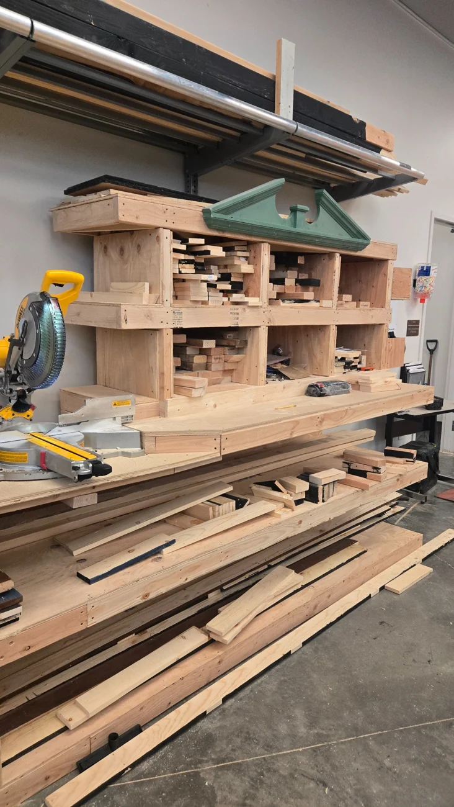
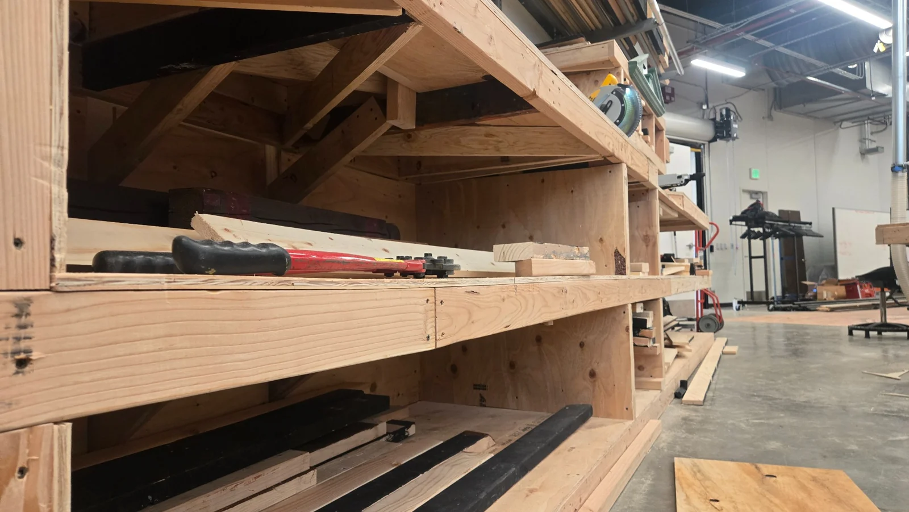

CMU SCENE SHOP / SEPT 2024-MAY 2026
Scene Shop Fabrication
Practical fabrication and workspace improvements during my employment in Colorado Mesa University's theater scene shop.

A better way to cut long lumber
I independently designed and built an 18-foot miter saw workstation for handling long lumber, with integrated storage and a continuous support surface. I needed to maintain a stable, level cutting setup while working within the scene shop's space constraints.
Improve how the shop uses its space
I designed four mobile 4-by-8-foot worktables with lower shelves and wheels. The shop could move the tables into different arrangements for building large set pieces or handling multiple projects.
Divide the work and help the team succeed
I organized coworkers into smaller groups responsible for legs, tabletops, shelves, casters, and final assembly. Because I was familiar with the shop's tools, I also helped new coworkers work safely and learn unfamiliar operations while continuing to fabricate alongside them.
Infrastructure used by the people who built it
The finished station and worktables gave the shop usable work surfaces and material support. The experience taught me about translating a design into a built object and about leadership through planning, delegation, and practical problem-solving.
BUILD DOCUMENTATION
Designed and built.
Photographs of the completed 18-foot workstation from different angles, showing the supported cutting surface, open storage, and shop installation.





What could strengthen this case study further?
The workstation is documented with real construction photos. Images of the four mobile worktables, sketches, and dimensions would help establish the remainder of the scene-shop work.
Explore other projects